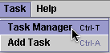
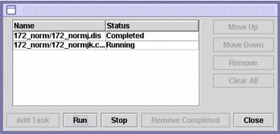

Task Menu

As your datasets get bigger, the time it will take to make all the necessary calculations will increase rapidly. Therefore, MAGIC allows you to establish
a list of tasks to be performed in sequence. You can tell MAGIC to begin a series of steps and then walk away from your computer. MAGIC will perform this sequence of tasks while you do other things. For example, you can establish a list of tasks to perform and go home for the night. When you return the next morning, MAGIC will have completed the series of tasks. At this time, the only tasks that can be performed are calculating dissimilarities and clusters.
Task Manager (Control Shift M)

The window above is the task manager. It allows you to add or remove a task, change the order of a task as well as various housekeeping chores.
Add Task (Control T)
This option allows you to add a task without going through the task manager.
Help (Control H)
This displays a modified version of this User's Guide within MAGIC Tool.